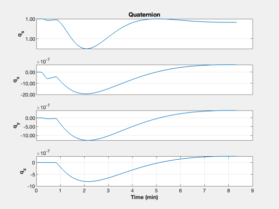
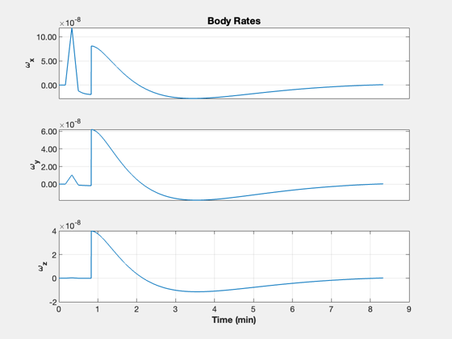
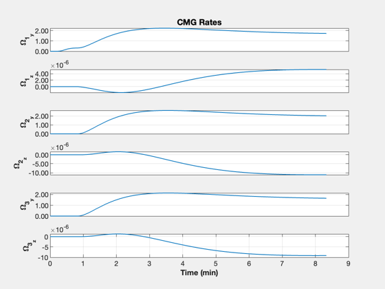
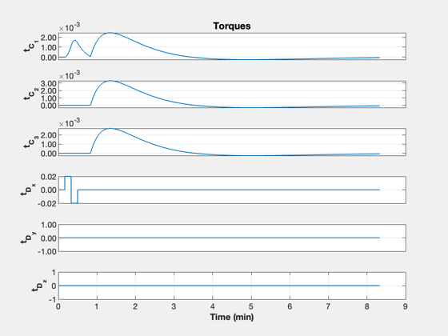

Gateway docking simulation
Loads the stored MassProps.mat.
See also: PID3Axis, PIDMIMO, RHSSGCMG, RK4, TimeHistory
Contents
%-------------------------------------------------------------------------- % Copyright (c) 2022 Princeton Satellite Systems, Inc. % All rights reserved. %-------------------------------------------------------------------------- % Since 2023.1 %--------------------------------------------------------------------------
User inputs
tEnd = 500; % s dT = 0.1; % s % Disturbance torque tD = [0.02;0;0]; % Nm kD = [100 200 300]; % Doublet times % Docking kDock = 500; % Target quaternion and Orion residual angular rates qTarget = [1;0;0;0]; omegaOrion = [1;1;1]*1e-6; printFigs = false; % create PDFs of figures
Script control
if( printFigs ) close all end
Read in the Gateway and Orion inertia
s = load('MassProps.mat');
nSim = floor(tEnd/dT);
x = [1;zeros(12,1)];
xP = zeros(length(x)+6,nSim);
Design the controller
dC = PID3Axis; dC.q_desired_state = qTarget; dC.inertia = s.inrG; dC.dT = dT; [dC.a, dC.b, dC.c, dC.d] = PIDMIMO(1,1,0.01,200,0.05,dT);
Simulation
Default data structure
dRHS = RHSSGCMG; dRHS.inr = s.inrG; for k = 1:nSim % Attitude control [tC, dC] = PID3Axis( x(1:4), dC ); if( k > kD(1) && k < kD(2)) dRHS.torque = tD; elseif( k > kD(2) && k < kD(3)) dRHS.torque = -tD; else dRHS.torque = [0;0;0]; end if( k == kDock ) [x(5:7),inr] = Docking(x(5:7),s,omegaOrion); dRHS.inr = inr; dC.inertia = inr; end dRHS.tC = -tC; xP(:,k) = [x;dRHS.tC;dRHS.torque]; x = RK4(@RHSSGCMG,x,dT,0,dRHS); end
Plot
yL = {'q_s' 'q_x' 'q_y' 'q_z' '\omega_x' '\omega_y' '\omega_z'...
'\Omega_{1_y}' '\Omega_{1_z}' '\Omega_{2_y}' '\Omega_{2_z}'...
'\Omega_{3_y}' '\Omega_{3_z}' 't_{C_1}' 't_{C_2}' 't_{C_3}'...
't_{D_x}' 't_{D_y}' 't_{D_z}'};
t = (0:nSim-1)*dT;
k = 1:4;
TimeHistory(t,xP(k,:),yL(k),'Quaternion'); k = 5:7;
TimeHistory(t,xP(k,:),yL(k),'Body Rates'); k = 8:13;
TimeHistory(t,xP(k,:),yL(k),'CMG Rates'); k = 14:19;
TimeHistory(t,xP(k,:),yL(k),'Torques');
    Print to file
if( printFigs ) for k = 1:4 PrintFig(1,4,k,sprintf('DS%d',k)); end end function [omega,inr] = Docking( omegaOld, s, omegaOrion )
Docking
rO = [-4;0;0]; rG = [ 7;0;0]; mO = 33446; mG = 40000; c = (mO*rO + mG*rG)/(mO+mG); inr = s.inrG + s.inrO - mO*SkewSq(rO-c) - mG*SkewSq(rG-c); omega = inr\(s.inrG*omegaOld + s.inrO*omegaOrion);
end %-------------------------------------- % $Id: e062aedbc41ada792d3afd9f1bf6243e0164dc43 $